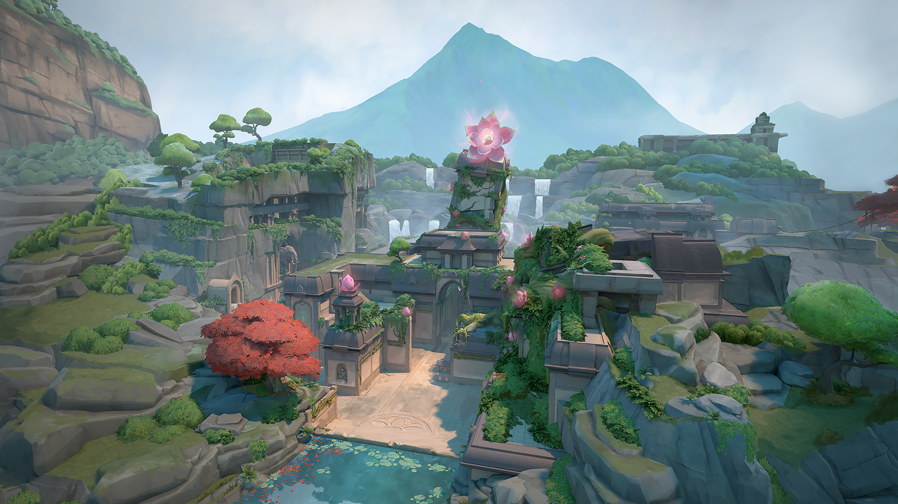

Valorant es un hero shooter en primera persona multijugador gratuito desarrollado y publicado por Riot Games. El juego se anunció por primera vez con el nombre en clave Project A en octubre de 2019. Fue lanzado para Microsoft Windows el 2 de junio de 2020 después de su beta cerrada lanzada el 7 de abril de 2020. Valorant se inspira en la serie de videojuegos de disparos táctico Counter-Strike y toma prestadas varias mecánicas, como el menú de compra, los patrones de spray y la imprecisión al moverse.
AGENTES
DUELISTAS
Jett
ROL
Duelista
BIOGRAFIA
Proviene de Corea del Sur. El ágil y evasivo estilo de pelea de Jett le permite enfrentarse a riesgos que otros no pueden. Es imparable en todos los enfrentamientos y acaba con sus enemigos antes de que sepan qué los atacó.
Q : RÁFAGA ASCENDENTE
Propulsa a Jett hacia el aire AL INSTANTE.
E : IMPULSO CICLÓN
ACTIVA para preparar una ráfaga de viento durante un tiempo limitado. VUELVE A USAR el viento para propulsar a Jett en la dirección a la que se dirige. Si no se está moviendo, se propulsará hacia adelante.
C : NUBE EXPLOSIVA
Lanza un proyectil AL INSTANTE que se convierte en una nube que bloquea la visión al impactar alguna superficie. MANTÉN PRESIONADA la tecla de la habilidad para cambiar la trayectoria del humo hacia donde apuntes.
X : TORMENTA DE CUCHILLAS
EQUIPA un conjunto de cuchillos de gran precisión que se recargan al asesinar a un oponente. DISPARA para lanzar un cuchillo hacia tu objetivo y usa el DISPARO SECUNDARIO para lanzar todos los cuchillos restantes.
Raze
ROL
Duelista
BIOGRAFIA
Raze llega de Brasil con su explosiva personalidad y sus grandes armas. Gracias a su contundente estilo de juego, es muy buena para separar los enemigos atrincherados y para despejar espacios estrechos con una gran cantidad de explosiones.
Phoenix
ROL
Duelista
BIOGRAFIA
Proviene del Reino Unido. El poder estelar de Phoenix se manifiesta en su estilo de combate al incendiar el campo de batalla con sus granadas aturdidoras y cegadoras. Sin importar si cuenta con apoyo o no, participará en la batalla bajo sus propios términos.
Reyna
ROL
Duelista
BIOGRAFIA
Desde el corazón de México, Reyna llega para dominar los duelos uno contra uno y cada asesinato que realiza aumenta su poder. Su letalidad solo está limitada por tu destreza al usarla, por lo que su eficacia dependerá mucho de ello.
Yoru
ROL
Duelista
BIOGRAFIA
El nativo de Japón, Yoru, fractura la realidad para infiltrarse en las líneas enemigas sin ser visto. Con engaños y agresividad por igual, sorprende a sus objetivos antes de que sepan dónde buscarlo.
Neon
ROL
Duelista
BIOGRAFIA
La agente filipina, Neon, avanza a velocidades impactantes, descargando ráfagas de energía bioeléctrica tan rápido como su cuerpo la genera. Se adelanta velozmente a sus enemigos para atraparlos desprevenidos y luego los fulmina más rápido que un rayo.
CONTROLADORES
Omen
ROL
Controlador
BIOGRAFIA
Un espectro de la memoria, Omen caza entre las sombras, ciega a los enemigos, se transporta a través del campo de batalla y deja que la paranoia los invada mientras intentan descubrir dónde atacará.
Brimstone
ROL
Controlador
BIOGRAFIA
Proveniente de Estados Unidos, Brimstone proporciona una constante ventaja para su equipo con su arsenal orbital. Su habilidad otorga información de forma precisa y a distancia, lo que lo hace un comandante sin igual en el campo.
Viper
ROL
Controlador
BIOGRAFIA
Química estadounidense, Viper despliega varios artefactos químicos venenosos para controlar el campo de batalla y afectar la visión de los enemigos. Si las toxinas no asesinan a su presa, sin duda lo harán sus juegos mentales.
Astra
ROL
Controlador
BIOGRAFIA
La agente ghanesa Astra canaliza las energías del cosmos para remodelar los campos de batalla a su antojo. Con pleno dominio de su forma astral y un talento para una profunda previsión estratégica, siempre está eones por delante del próximo movimiento de su enemigo.
Harbor
ROL
Controlador
BIOGRAFIA
Originario de las costas de la India, Harbor arrasa el campo de batalla utilizando tecnología ancestral que controla el agua. Desata corrientes furiosas y olas aplastantes para escudar aliados y apalear oponentes.
INICIADORES
Breach
ROL
Iniciador
BIOGRAFIA
Breach, el sueco biónico, lanza poderosas ráfagas cinéticas para abrirse paso a la fuerza a través del territorio enemigo. El daño y la interrupción que inflige garantizarán que ninguna pelea sea justa.
Sova
ROL
Iniciador
BIOGRAFIA
Proveniente de la tundra del eterno invierno de Rusia. Sova rastrea, encuentra y elimina a sus enemigos con gran eficiencia y precisión. Su arco personalizado y sus increíbles habilidades de exploración impedirán que sus enemigos puedan esconderse de él.
Skye
ROL
Iniciador
BIOGRAFIA
Procedentes de Australia, Skye y su manada de bestias se abren paso por territorio hostil. Con sus creaciones que obstaculizan al enemigo y su poder para sanar a los demás, los equipos serán más fuertes y seguros al lado de Skye.
Kay/o
ROL
Iniciador
BIOGRAFIA
KAY/O es una máquina de guerra creada con un solo propósito: neutralizar radiantes. Su poder para suprimir las habilidades enemigas neutraliza la capacidad de sus rivales para contraatacar, un aspecto que le da a él y a sus aliados la ventaja definitiva en la batalla.
Fade
ROL
Iniciador
BIOGRAFIA
Fade, la cazarrecompensas turca, desata el poder de las pesadillas para apoderarse de los secretos del enemigo. En armonía con el terror puro, acecha a sus objetivos y revela sus miedos más profundos antes de aplastarlos en la oscuridad.
Gekko
ROL
Iniciador
BIOGRAFIA
Gekko, el nativo de Los Ángeles, lidera un grupo de criaturas revoltosas y son como uña y mugre. Sus amiguitos avanzan a toda velocidad, dispersando a los enemigos, y Gekko los persigue para reagruparlos y lanzarlos de nuevo.
CENTINELAS
Sage
ROL
Centinela
BIOGRAFIA
El bastión de China. Sage proporciona seguridad para sí misma y para su equipo en cualquier lugar. Gracias a su capacidad de revivir a sus compañeros caídos y evitar ataques agresivos, les da un lugar de protección en medio de la caótica pelea.
Cypher
ROL
Centinela
BIOGRAFIA
Cypher, el agente de información marroquí, es un sistema de vigilancia de un solo hombre que puede monitorear todos los movimientos de sus enemigos. No hay secreto que no descubra ni maniobra que no detecte. Cypher siempre está vigilando.
Killjoy
ROL
Centinela
BIOGRAFIA
Killjoy, la prodigio de Berlín, asegura fácilmente el campo de batalla con un arsenal de dispositivos. Si el daño que inflige su equipamiento no detiene a sus enemigos, la debilitación de sus robots la ayudarán a aniquilarlos.
Chamber
ROL
Centinela
BIOGRAFIA
Bien vestido y bien armado, el diseñador de armas francés Chamber repele agresores con una precisión mortal. Aprovecha su arsenal personalizado para mantener a los enemigos a raya y eliminarlos desde lejos. Siempre cuenta con la contingencia perfecta para cada plan.
¿Cuál es tu agente favorito?
MAPAS
Lotus

Una misteriosa estructura cuyos muros resguardan un conducto astral irradia poder ancestral. Inmensas y monolíticas puertas brindan una variedad de oportunidades de movimiento y abren el camino a tres misteriosos sitios.
Pearl
Los atacantes avanzan hacia los defensores en este mapa de dos sitios, ambientado en una ciudad submarina. Pearl es un mapa enfocado en el entorno, sin mecánicas. Lleva la batalla hacia un Mid compacto o a zonas más extendidas en nuestro primer mapa en la Tierra Omega.
Fracture
Un centro de investigación ultrasecreto dividido por un experimento fallido de radianita. Con opciones de defensa tan divididas como el mismo mapa, la elección es tuya: enfrentar a los atacantes en su propio territorio o cerrar las escotillas y resistir el asalto.
Breeze
Disfruta de la vista de ruinas históricas o cuevas junto al mar en este paraíso tropical. Pero trae algo con que cubrirte del sol... y de los disparos a larga distancia. Lo necesitarás en estos grandes espacios abiertos. Cuida los flancos y siente la brisa.
Icebox
Tu próximo campo de batalla es un sitio de excavación secreto de Kingdom en algún lugar del ártico. Los dos sitios para plantar están protegidos tanto por nieve como por metal, y no es fácil acceder a ellos de forma horizontal. Aprovecha las tirolesas y nunca te verán venir.
Bind
Dos sitios. No existe un centro. Debes elegir derecha o izquierda. ¿Cuál será tu elección? Ambos ofrecen caminos directos para los atacantes y un par de teletransportadores unidireccionales facilitan el flanqueo.
Haven
Bajo un monasterio olvidado, emerge un clamor entre los agentes rivales que se enfrentan para controlar tres sitios. Hay más territorio por controlar, pero los defensores pueden usar el terreno adicional para realizar ataques agresivos.
Split
Si quieres ir lejos, debes subir. Un par de sitios divididos por un centro elevado permite un movimiento rápido por medio de dos ascensores de cuerda. Cada sitio cuenta con una gran torre vital para el control. Recuerda mirar arriba antes de que todo vuele por los aires.
Ascent
Un campo abierto para pequeñas batallas de posicionamiento y desgaste dividen Ascenso en dos sitios. Puedes fortificar cada uno con puertas de bombas irreversibles; una vez puestas, tendrás que destruirlas o encontrar otra forma de pasar. Cede el menor territorio posible.